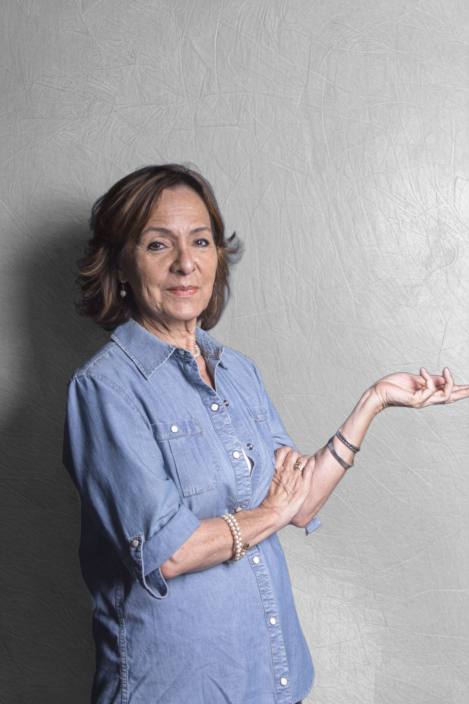

Nuestras Fundadoras

Alice J. Araujo Lobo
Cofundadora y Coordinadora GeneralPromueve la cohesión institucional. Gestiona la dinámica de la CLID. Impulsa el desarrollo sostenible y el fortalecimiento del ecosistema local, con articulaciones estratégicas que incrementen la pertinencia universitaria.

María Daniela Urriola Torres
Cofundadora y Coordinadora EjecutivaResponsable de la Gestión de la Innovación Organizacional. Dirige la transformación tecnológica, coordina el diseño de soluciones disruptivas y lidera la ejecución estratégica de proyectos de vanguardia para el sector productivo.